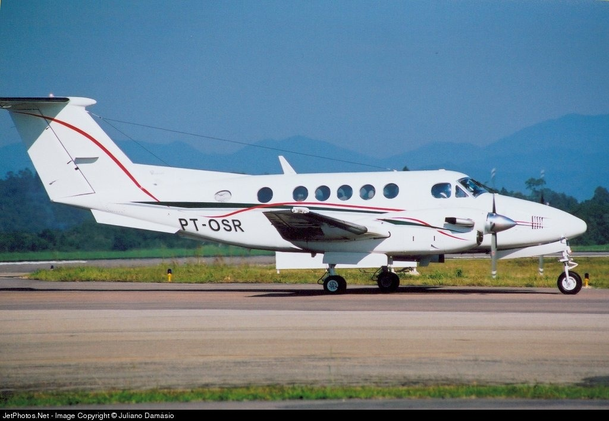
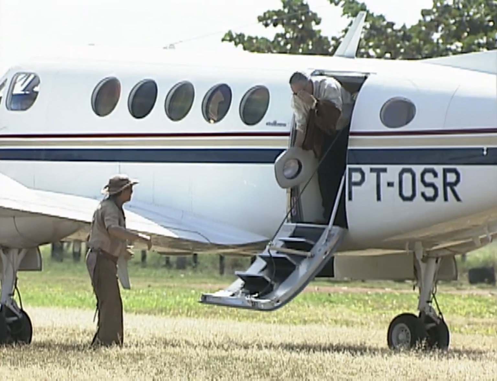

A participação do PT-OSR na novela “O Rei do Gado”
Um King Air que fez parte da ficção em 1996 e, anos depois, protagonizou um acidente real nas ruas do Recife. A arte imita a vida?
Por Bruno Rhavani · Aviões e arte

Olá, comunidade aeronáutica. Tudo bem com todos?
Primeiramente, gostaria de agradecer o convite do Portal Papa Charlie Golf para participar de mais uma contribuição. Além de compartilhar as narrações com o Paulo nas lives diárias do Canal Papa Charlie Golf no YouTube, trarei aqui algumas curiosidades da aviação que possivelmente passam despercebidas aos olhos das pessoas: a participação da aviação nas artes cênicas.
Aviação nas artes: um arquivo em construção
Não vou focar somente em aviões que aparecem nas telenovelas e no cinema, principalmente nas produções nacionais, mas também nos espaços onde possa ter ocorrido alguma gravação, nos aeródromos espalhados pelo Brasil.
Com o tempo, vamos construir aqui um arquivo dessas curiosidades sobre a aviação nas artes, da nossa teledramaturgia e do cinema nacional. Se surgirem curiosidades do mundo internacional das artes, talvez eu traga algumas também. Já digo de antemão que não sou cinéfilo, sou mais noveleiro, mas vamos colocar o projeto para fluir.
Só para reforçar: não ficarei narrando enredos de novelas. Já existem muitos portais que fazem isso. Ficarei restrito ao assunto aviação nas teleproduções.
Uma novela que completa 30 anos
Fiquei pensando em qual assunto abordar nesta primeira dissertação. Entre as novelas que assisti ao longo dos últimos anos, cheguei a uma cena de “O Rei do Gado”, que já tinha me deixado comovido desde a exibição original, em 1996, e que ganhou um reforço quando percebi o prefixo de uma aeronave utilizada em várias cenas.
Aproveitando que estamos chegando ao fim de 2026: no início deste ano, o Grupo Globo, por meio do canal por assinatura “Globoplay Novelas” (antigo Canal Viva), trouxe, após votação com internautas, uma nova exibição da clássica novela do autor Benedito Ruy Barbosa (*17/04/1931 +07/07/2026). A novela completa 30 anos da estreia original, que foi em 17 de junho de 1996.
Eu não assisti pela TV por assinatura. Preferi ver a novela completa pelo próprio aplicativo de streaming. E é com ela que inicio as curiosidades sobre a aviação nas artes.
O avião da fazenda de Bruno Mezenga
Na segunda fase da novela, Bruno Mezenga (Antônio Fagundes) é um fazendeiro de gado nas terras de Goiás, às margens do Rio Araguaia. A única forma de ele chegar às suas terras era de avião. Sim, na propriedade havia uma pista de pouso.
Uma imagem me chamou a atenção, e fiz questão de congelar a tela para tirar uma foto e depois pesquisar a matrícula daquela aeronave: seria a matrícula real ou um prefixo cênico, para proteger as informações da aeronave? Afinal, em 1996, quem atentaria aos detalhes de um avião, se não os próprios entusiastas?

A matrícula do avião é PT-OSR.
O acidente da ficção
Passam-se os capítulos e, por volta do capítulo 60, o personagem Bruno Mezenga sofre um acidente aéreo nas matas do Araguaia, e os outros dois personagens, os pilotos, não resistem. Alguns capítulos depois, Bruno é encontrado e resgatado com vida. E o resto é só novela.
Na novela, portanto, a aeronave sofre um grave acidente. E as imagens usadas nas cenas de resgate e busca pelas vítimas são, na verdade, cenas reais do resgate das vítimas fatais e dos destroços do acidente que envolveu a banda Mamonas Assassinas. Por isso, essas cenas me deixaram impactado desde a época original, e sempre que reprisam ainda me chocam.
Quem era o PT-OSR
Fui pesquisar a matrícula e fiquei surpreso com o que aconteceu com ela. Quem já viu o prefixo provavelmente já se ligou de que aeronave estou falando. Trata-se de um bimotor turboélice executivo:
- Modelo: Beechcraft Super King Air B200
- Fabricação: 1981 · série (MSN) BB-784
- Motores: dois Pratt & Whitney Canada PT6A
- Operadores: já foi operada pela TL Táxi Aéreo e, anos depois, passou para a JC Shows Ltda., que prestava serviços para a Banda Calypso (Chimbinha, já sem Joelma, que seguiu carreira solo)
Não sei se, na época da novela, era a TL Táxi Aéreo que alugava a aeronave para a Rede Globo.
A arte imita a vida?
Escrevo este texto em 21 de novembro de 2026. Pesquisando sobre a aeronave, vi que o acidente real aconteceu em 23 de novembro de 2008, ou seja, há 18 anos. Mais um motivo para começar essas curiosidades justamente com ela.
Resumindo o acidente: a aeronave fazia um voo procedente de Teresina (PI) com destino ao Recife (PE), com 10 ocupantes. Ao se aproximar do Aeroporto Internacional dos Guararapes (Gilberto Freyre), sofreu uma pane simultânea dos dois motores, por pane seca, e precisou realizar um pouso forçado em uma das ruas do bairro de San Martin. Infelizmente, houve duas vítimas fatais: o comandante e um dos passageiros.
Detalhes técnicos? Procure o Relatório Final A-038/CENIPA/2010.
No canal Papa Charlie Golf, no YouTube, há um vídeo falando sobre este acidente em Recife.
Como funciona esta coluna
Este é o meu estilo: pegar a aeronave em cena, seja novela ou filme, anotar o prefixo ou a matrícula, pesquisar sobre ela e ver o que aconteceu no decorrer dos anos. Se o final for triste, deixo os detalhes técnicos para o CENIPA. Aqui falarei apenas das curiosidades da aviação nas artes.
Vale um aviso: hoje em dia, em alguns momentos, uma aeronave em cena pode aparecer com a matrícula maquiada, por segurança, já que se trata da identificação oficial dela. Muitos entusiastas podem fazer a mesma brincadeira: apareceu em cena, anotou a matrícula e foi pesquisar.
Eu já conhecia o acidente real em Recife, que nunca será esquecido, mas não tinha ideia da identificação da aeronave. Numa cena de novela, só por curiosidade, peguei a matrícula, pesquisei e cheguei a uma informação curiosa: o avião que participou de uma novela, sofrendo um acidente fictício, se envolveu em um acidente real 12 anos depois.
Por fim, sobre o PT-OSR, é só isso. Enquanto isso, vou procurando outras aeronaves nas artes e, assim que achar uma curiosidade interessante, venho compartilhar com vocês o que aconteceu com ela no decorrer dos anos.
Valeu, comunidade aeronáutica. Vou ficando por aqui.
Assista no canal
O vídeo do canal Papa Charlie Golf sobre o acidente do PT-OSR no Recife:
E você, já reparou em algum prefixo de avião numa novela ou num filme? Conta pra gente!